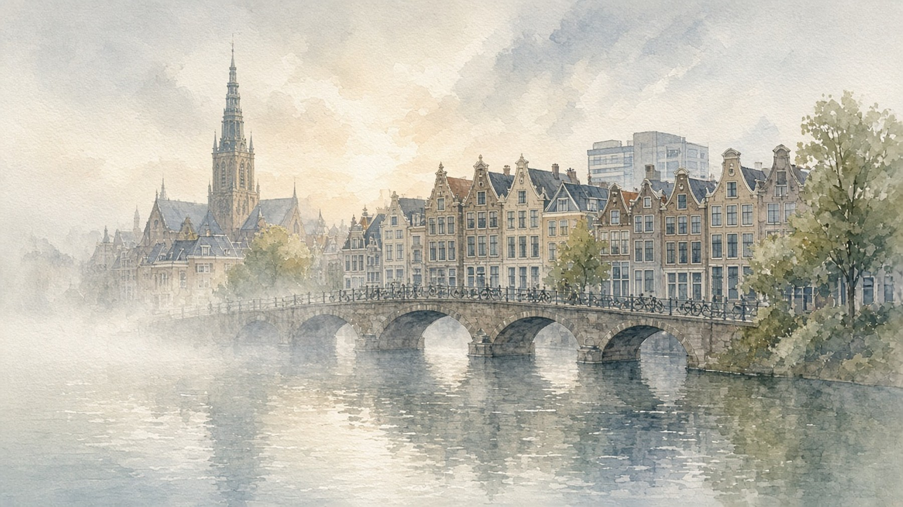

Lobsyhoger onderwijs
Lobsyhoger onderwijsVoor studenten mbo, hbo en wo
Lobsyhoger onderwijs
Je beantwoordt stellingen over hoe je werkt, wat je energie geeft, wat je belangrijk vindt en waar je tot je recht komt. Daarna zie je welke beroepen en stappen bij je passen.
 Werkstijl
Werkstijl Drijfveren
Drijfveren Pauze
Pauze Waarden
Waarden Werkomgeving
Werkomgeving80 stellingen · ongeveer 30 minuten · geen goede of foute antwoorden
Ontdek wat bij je past, in je opleiding en daarna. Kies je instelling en opleiding en vul de code in die je van je docent of loopbaanbegeleider hebt gekregen.